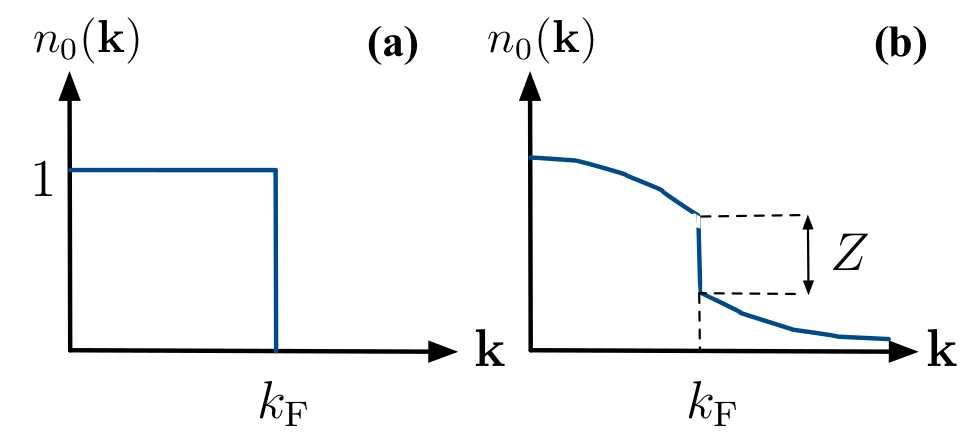
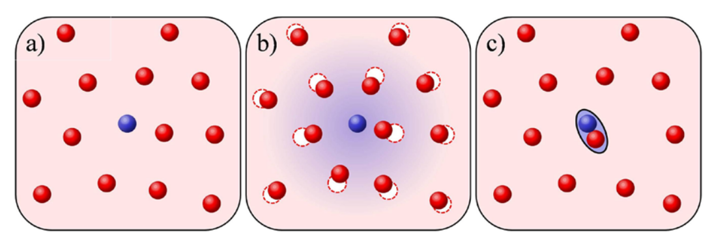
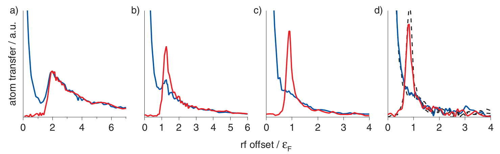
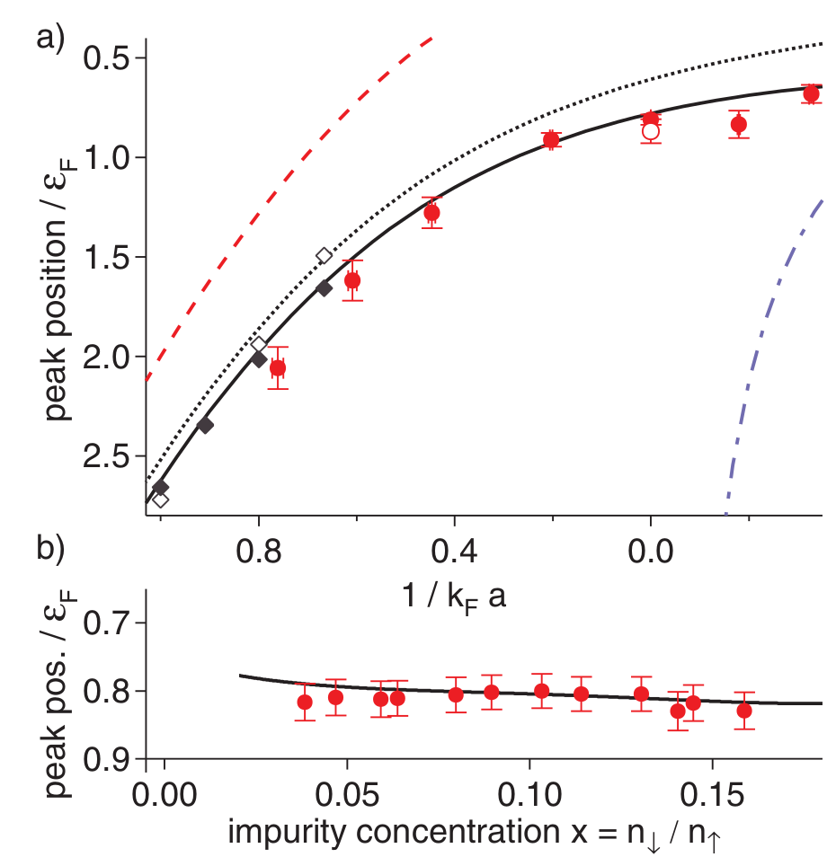
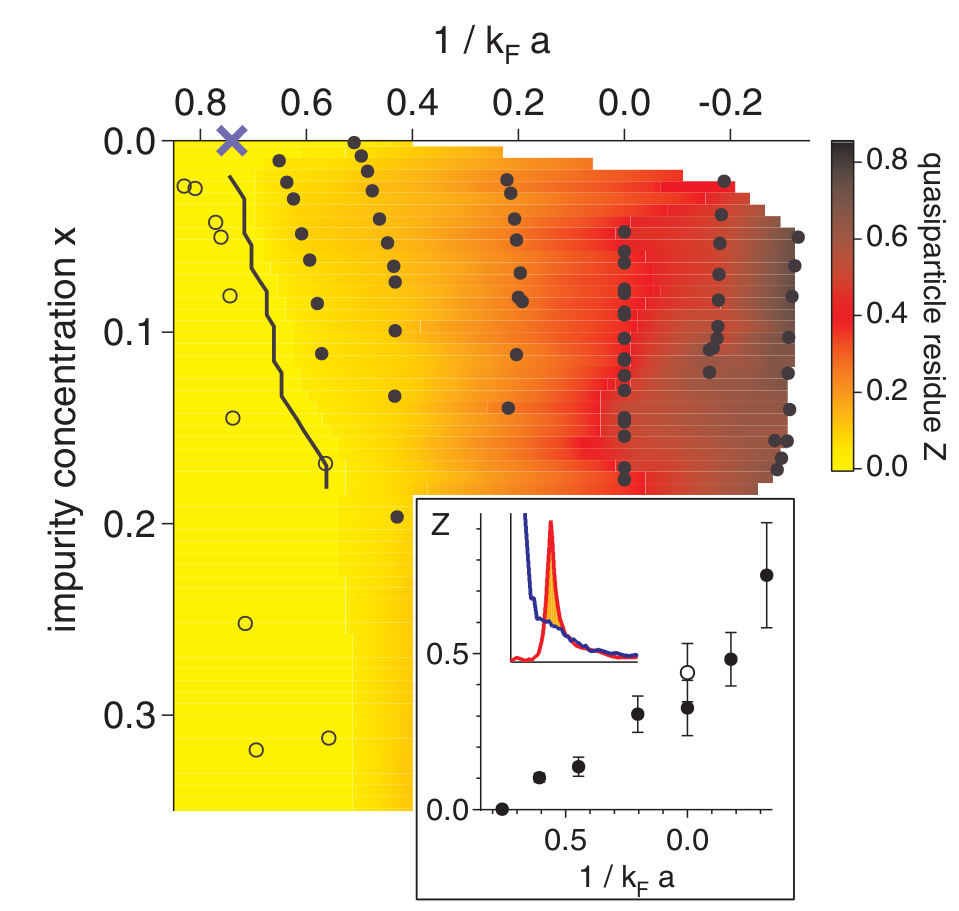
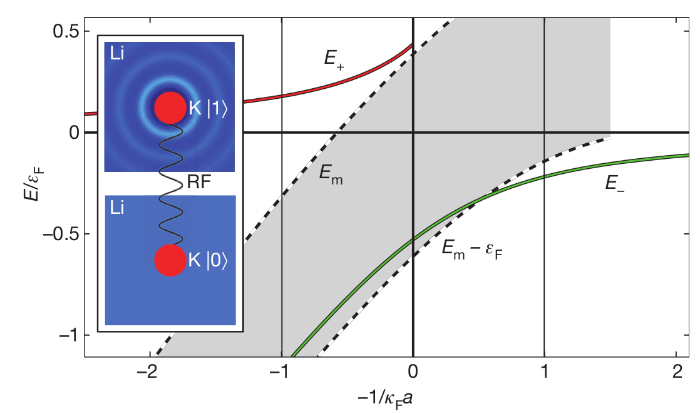
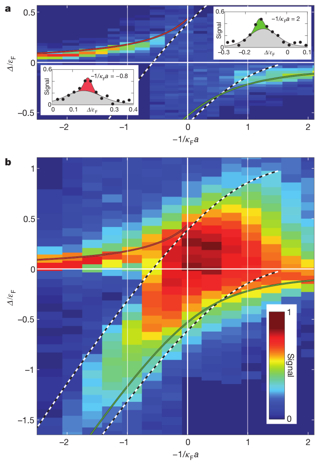

费米液体(冷原子作业)
Table of Contents
1. 自由费米子
1.1. 基态
对于无相互作用的费米气体, 每个粒子的本征态是动量为 \(\vec{k}\) 的平面波 态. 多体态可以由每个平面波的占据数 \(n(\vec{k})\) 来标记.
对于多体自由费米系统, 它的基态为, 对于 \(k < k_F\) , \(n_0(\vec{k}) = 1\) , 对于 \(k > k_F\) , \(n_0(\vec{k}) = 0\) .
它的激发可以由偏离分布 \(n_0(\vec{k})\) 的程度来测量. 那么它的总能量就是
\begin{align} \delta E = \sum_{\vec{k}} \left( \frac{\hbar^2 \vec{k}^2}{2m} - \mu \right) \delta n(\vec{k}) \end{align}其中 \(\mu = \hbar^2 k_F^2/2m\) , \(\delta E\) 总是正的.
1.2. \(E_F\) 的估计
自由费米气体， 假设处在体积为 \(V\) 的正方体中, 采用周期性边界条件, 总共有 \(N\) 个费米子. 那么粒子数密度为:
\begin{align*} n = \frac{N}{V} \end{align*}总的粒子数 \(N\) 在动量空间中可以表示成:
\begin{align*} N = 2 \cdot\frac{\frac{4\pi}{3}k_F^3}{\Delta k} \end{align*}\(2\) 表示一个态上可以占据自旋相反的两个电子. 分子为费米球的体积. \(\Delta k\) 为动量空间中的体积元,为:
\begin{align*} \Delta k = \frac{(2 \pi )^3}{V} \end{align*}所以最终的结果为:
\begin{align*} n = 2 \cdot \frac{1}{V}\frac{\frac{4\pi}{3}k_F^3}{\frac{(2 \pi )^3}{V}} = \frac{k_{F}^3}{3 \pi^2} \end{align*}费米能量为:
\begin{align*} \varepsilon_F = \frac{\hbar^2 k_F^2}{2m} \end{align*}所以对于费米气体 \(n, k_F, \varepsilon _F\) 具有相同的信息, 三者并不独立.
1.3. 有限温
在有限温, 也就是非零温下, 假设同时有简谐势 \(V(\vec{r})\) 存在. 可以证明, 当总的粒子数 \(N\) 非常大时, 可以放心地考虑半经典近似, 粒子数的分布为
\begin{align} f(\vec{r}, \vec{k}) = \frac{1}{e^{\beta \left( \frac{\hbar^2 \vec{k}^2}{2m} + V (\vec{r}) - \mu \right)} + 1} \end{align}其中 \(\beta = 1/(k_B T)\) . 局域粒子数密度为
\begin{align} n(\vec{r}) = \int \mathrm{d}^3 \vec{k} \cdot f(\vec{r}, \vec{k}) \end{align}这就是局域密度近似 ( local density approximation, LDA ) . 化学势 \(\mu\) 可以由下式决定
\begin{align} N = \int \mathrm{d} \vec{r} n (\vec{r}) \end{align}2. 费米液体理论
2.1. 费米液体的基本假设的参数
朗道费米液体理论将自由费米气体进行了拓展, 拓展到了相互作用的费米气体. 有如下假设: 准粒子仍然是有良好动量定义的费米子. 这时, 费米面的定义为基 态动量分布不连续的地方. \(n_0(\vec{k})\) 的不连续的大小叫做准粒子的 residual \(Z\) , 并且对于费米液体来说 \(0 < Z <1\) .
如果我们将 \(n_0(\vec{k})\) 改变 \(\delta n(\vec{k})\) , 总能量的改变展开 到 \(\delta n (\vec{k})\) 的一阶为
\begin{align} \delta E = \sum_{\vec{k}} \epsilon(\vec{k})\delta_n(\vec{k}) \end{align}其中 \(\epsilon (\vec{k}) = \delta E / \delta n (\vec{k})\) , 是动量为 \(\vec{k}\) 的准粒子能量.
同样, 对于各向同性的相互作用费米子系统, 可以定义准粒子速度
\begin{align} v_k = \frac{1}{\hbar}\frac{\partial \varepsilon_{\vec{k}}} {\partial k} \end{align}进而定义有效质量 ( effective mas ) \(m^{*}\) 为
\begin{align} v_k = \frac{\hbar k}{m^{*}} \end{align}对于有相互作用的系统, \(\epsilon_{\vec{k}}\) 通常都不是一个抛物线型的函 数, 因此 \(m^{*}\) 应该依赖于 \(k\) 的取值. 在有限密度时, 最通常最关心的是 \(m^{*}\) 在费米动量附近的取值. 如果系统是各向异性的, \(m^{*}\) 通常是一个 张量. 有效质量 \(m^{*}\) 和 residual \(Z\) 是描述费米液体的两个最基本的参 数, 叫做费米液体参数. \(m^{*}\) 发散, 或者 \(Z\) 消失都是费米液体理论失效 的表现, 也就是说从费米液体到非费米液体的转变.
将 \(\delta E\) 展开到 \(\delta n(\vec{k})\) 的下一阶, 得到
\begin{align} \delta E = \sum_{\vec{k}}\delta n (\vec{k}) + \frac{1}{2} \sum_{\vec{k} \vec{k}'} f(\vec{k}, \vec{k}') \delta n(\vec{k}) \delta n (\vec{k}') \end{align}其中第二项解释为准粒子之间的相互作用. 还有一些其它的费米液体参数来描述 准粒子的相互作用, 在此不仔细展开.
2.2. 费米液体与自由费米气体的对比
下图 (a) 是自由费米气体, 下图 (b) 是费米液体, 并且标注出了 residual \(Z\) .

2.3. 费米液体参数的测量
费米面附近的态密度可以由下式计算
\begin{align} D(E_F) = \frac{V k_F m^{*}}{2\pi^2\hbar^2} \end{align}进而得到比热的低温展开
\begin{align} C_V = \frac{k_B^2 k_F T m^{*}}{3\hbar^2} \end{align}因此, 测量低温比热就可以直接得到有效质量 \(m^{*}\) . 而 residual \(Z\) 可 以通过 RF 谱 ( radio-frequency spectroscopy ) 测量.
3. 费米极化子
现在考虑一个费米液体的例子. 首先考虑考虑所有粒子的自旋都被极化到向上 \(|\uparrow\rangle\) 的无相互作用的费米气体, 考虑在热力学极限下, 费米动 量记为 \(k_F\) . 并且只考虑费米子之间的 s 波相互作用. 由于费米子总的波函 数要满足交换反对称性, 因此相同自旋的费米子之间不存在相互作用. 所以这一 个无相互作用的费米气体.
然后在这个完全极化为 \(|\uparrow\rangle\) 的系统中加入一个, 或者极少的自 旋向下 \(|\downarrow \rangle\) 的费米子, 这个自旋向下 \(|\downarrow \rangle\) 的费米子会和费米海中其它自旋向上 \(|\uparrow\rangle\) 的费米子 发生 s 波相互作用, 并且会形成一个 dressed state. 如下图所示, (a) 为在自旋 向上 \(|\uparrow\rangle\) 的费米海 ( 红色 ) 中加入一个自旋向下 \(|\downarrow \rangle\) 的费米子 (蓝色) , (b) 为形成一个 dressed state .

然而, 当相互作用变强时, 就会形成束缚态, 如上图 (c) 所示.
4. 相关实验
4.1. 通过 RF 谱对费米极化子和 residual 的测量
参考文献 [2] 在实验中观察到了费米极化子.
实验采用的是 Li-6 原子. 实验开始时, 将一团束缚在柱对称的光势阱中的 Li-6 原子极化到最低的超精细态 \(|1\rangle\) 上, 这对应于前面模型中的自旋 向上 \(|\uparrow\rangle\) 的费米子. 然后将一很小的一部分原子变到超精细态 \(|3\rangle\) 上, 这对应于前面模型中的自旋向上 \(|\downarrow\rangle\) 的费 米子. 然后通过 Feshbach 共振将它们耦合, 产生相互作用.
接下来测量超精细态 \(|3\rangle\) ( 它可以看作是杂质 ) 和超精细态 \(|1\rangle\) 与空的超精细态之间的跃迁的 \(RF\) 谱. 测量结果如下图

上图 (a) (b) (c) (d) 分别对应相互作用强度 \(1/(k_F a) = 0.76, 0.43 0.20, 0\) 蓝色的线表示环境超精细态 \(|1\rangle\) 即 \(|\uparrow\rangle\) , 红色的 线表示杂质超精细态 \(|3\rangle\) 即 \(|\downarrow\rangle\) . RF offset 为 零时, 红线为零, 取超精细态 \(|1\rangle\) 和 \(|2\rangle\) 之间的能级劈裂能 量为零.
在上图 (a) 中, rf offset 在零以上完全重合, 说明了两体分子配对. 当吸引相 互作用减小时, 如图 (b) (c) (d) , 在红色的杂质谱上出现了很窄的峰, 与红色的环境 线不再重合, 这个窄峰的出现说明了费米极化子的出现, 是一个寿命很长的准粒子.
下面的图的图 (a) 是在不同的相互作用强度下对应的杂质峰的位置, 它表征的是极化子的 能量 \(E_{\downarrow}\) . 虚线是变分的结果, 蓝色的虚线是平均场极限下杂质原子的能量. 实心菱 形是图形蒙卡的结果. 相对较大的 \(E_{\downarrow}\) 说明是正常态, 也就是弱 相互作用的极化子费米海.
下图 (b) 将横坐标换为杂质的多少. 可以看出, 峰的位置与杂质多少的关联性 很弱.

文章最后还有计算准粒子 residual 的结果, 如下图

极化子峰的谱权重会给出准粒子 residual .
实验上, 杂质峰和环境峰不重合的部分的面积 (上图插图中的阴影部分) , 再除以杂质峰的面积, 就是准粒 子 residual . 在上图中, 准粒子 residual 做为相互作用强度的杂质多少的函 数.
4.2. 强相互作用下排斥极化子的亚稳态
参考文献 [4] 是关于排斥极化子的实验.
实验把 K-40 原子掺入到 Li-6 费米海中. 通过 Feshbach 共振调节 s 波相互 作用.

上图是费米海中杂质的零温能谱. 图中有两个准粒子分支. 绿色的 \(E_-\) 线代 表吸引极化子. 可以看出, 极化子分支一直是基态. 但是当吸引相互作用强到一 定的临界值时, Li-6 K-40 组成的分子态能量更低. 从图上看就是绿线在吸引相 互作用弱的一端能量是最低的, 但是当吸引相互作用强到临界值时, 分子态的能 量, 也就是虚线会更低.
上图中的红线对应于排斥极化子, 它的能量 \(E_ + > 0\) ,
两条虚线中的阴影部分表示 \(E_m\) 和 \(E_m - \varepsilon_F\) , 是连续的分子 激发.
上图中的插图是从无相互作用的自旋态 \(|0\rangle\) 到相互作用态 \(|1\rangle\) 的 RF 谱的示意图. 过程为, 将 K-40 原子制备到无相互作用的超 精细态 \(|0\rangle = |F=9/2 , m_F = - 7/2\rangle\) 上 , 然后通过一个可调 的频率产生 RF 跃迁, 跃迁到共振的相互作用态 \(|1\rangle = | F = 9/2, m_F = -5/2\rangle\) 上. 得到的信号是跃迁的原子占比, 它作为频率的函数.
下图是不同失谐, 不同相互作用强度下得到的信号的假色图.

5. 总结
无相互作用费米气体的基态为所有粒子填充到费米球内.
有相互作用的费米子多 体系统可以唯像地由朗道费米液体理论来描述, 它假设相互作产生新的准粒子仍 然是有良好动量定义的费米子, 并且从基态的动量分布中定义了费米液体理论的 重要参数, 准粒子 residual . 同样对粒子的分布做一微扰, 通过能量的变化定 义另一个费米液体的重要参数, 有效质量.
当在很多的自旋 \(| \uparrow\rangle\) 的只考虑 s 相互费米子中加入少量自旋 \(|\downarrow\rangle\) 的费米子时, 在吸引相互作用较弱时, 会有极化子激发. 当吸引相互作用变强, 达到临界值时, 两个自旋相反的费米子就会耦合成分子, 变成等效的玻色子. 在排斥相互作用时, 存在一个大于零的解, 由于与基态的波 函数交叠较小, 所以假如一开始就制备在这样的态上, 它也会稳定存在很长时间 而不会跃迁到基态上, 它是一个亚稳态.
实验上通过 Feshbach 共振调节原子不 同超精细态之间的相互作用强弱, 通过 RF 谱的方法测量体系在不同相互作用强 度区域内的各种性质. 借助于冷原子系统中可调相互作用强度的实验优势, 研究费米子的 各种性质, 可以促进对其它物理领域的中的物理现象的理解.
6. 参考资料
[1] S. Nascimbène et al, PRL 103, 170402 (2009)
[2] André Schirotzek et al, PRL 102, 230402 (2009)
[3] S. Nascimbène et al, Nature volume 463, pages 1057–1060 (25 February 2010)
[4] C. Kohstall et al, Nature volume 485, pages 615–618 (31 May 2012)
[5] Marco Koschorreck et al, Nature volume 485, pages 619–622 (31 May 2012)